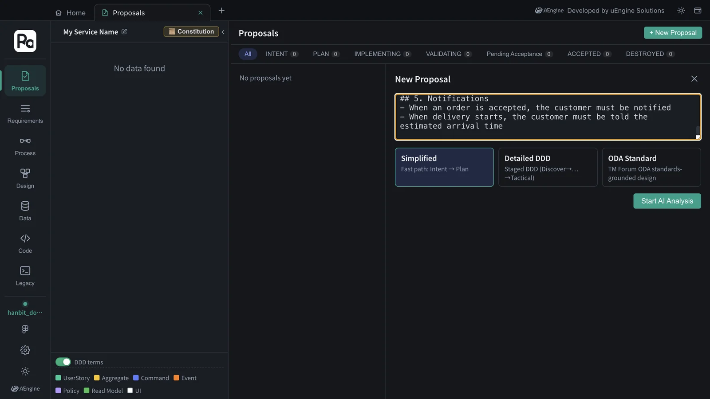
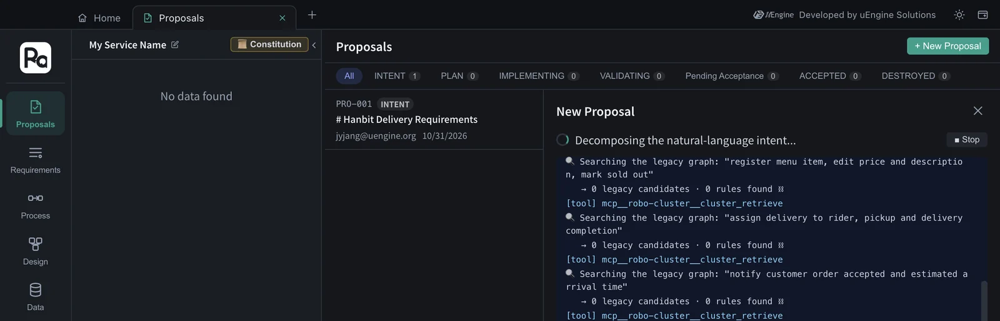
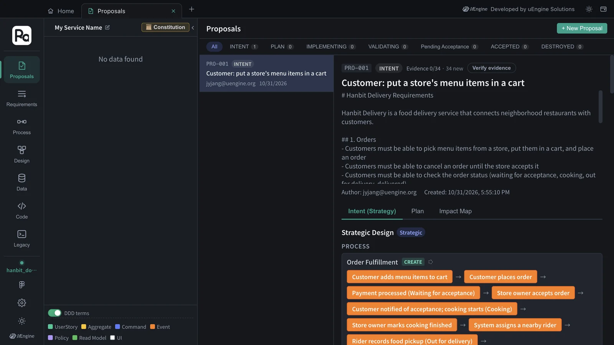
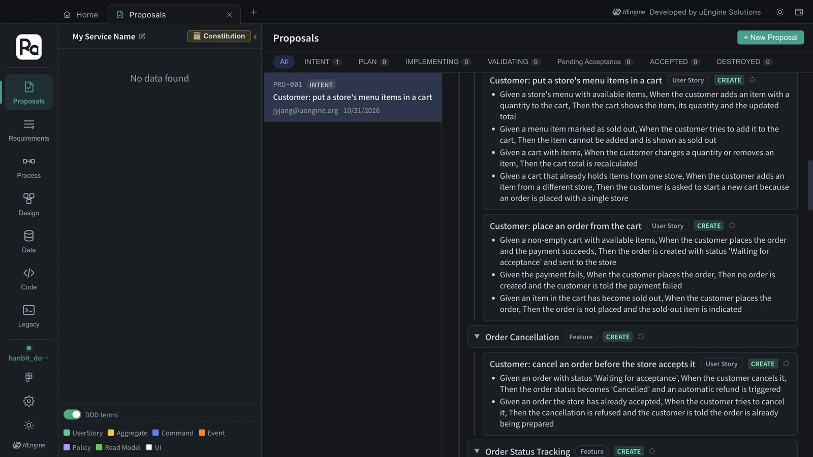
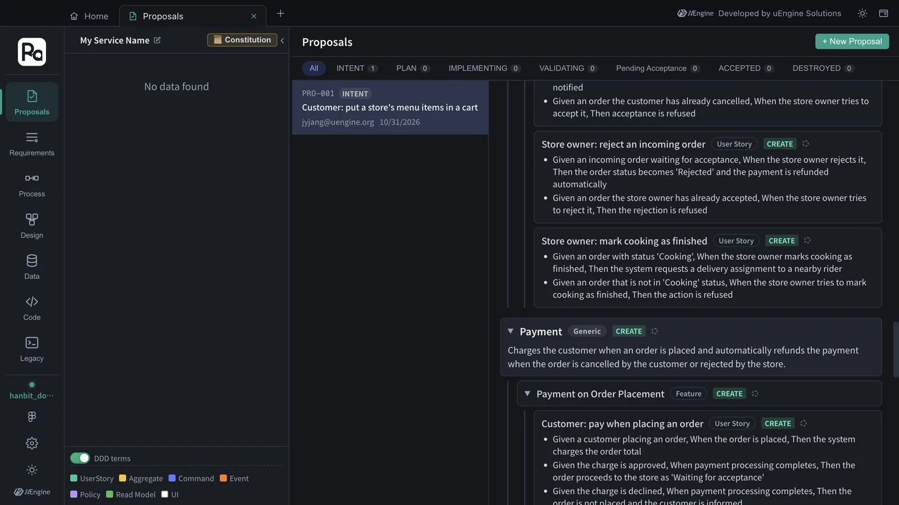

Paste a whole requirements document into a new proposal, and Claude Code's INTENT skill splits the entire document into bounded contexts · features · user stories · acceptance criteria · processes. No OpenAI key needed.
A whole document, not one line#
Chapter 3 started from a single requirement line. Real work usually starts from a document, such as a product plan or a requirements specification. There are two ways to start a design from a document.
| Way | Where | Who splits it | Key |
|---|---|---|---|
| Paste into a proposal (this chapter) | Proposals tab › + New Proposal | Claude Code's robo-proposal-intent skill |
Not needed |
| Upload document | Requirements tab › Upload document | The app backend's AI pipeline | OpenAI API key |
This chapter uses the first way, which works without a key. The result has the same shape as in Chapter 3 — the strategic design of one proposal — so you can carry on to the constitution · plan · implementation just like Chapters 4–7.
The practice document#
Download hanbit-delivery-requirements.md. It's a short document with Hanbit Delivery's requirements in five sections.
# Hanbit Delivery Requirements
Hanbit Delivery is a food delivery service that connects neighborhood restaurants with customers.
## 1. Orders
- Customers must be able to pick menu items from a store, put them in a cart, and place an order
- Customers must be able to cancel an order until the store accepts it
- Customers must be able to check the order status (waiting for acceptance, cooking, out for delivery, delivered)
## 2. Stores and menus
…
## 3. Payment
…
## 4. Delivery
…
## 5. Notifications
- When an order is accepted, the customer must be notified
- When delivery starts, the customer must be told the estimated arrival time
Hands-on 1 — Create a practice project#
Create a separate project so the result doesn't mix with the hanbit_delivery_en design from Chapters 3–7 (the same way as in Chapter 10).
- In the project bar on Home, click Switch project.
- Type
hanbit_doc_enin the new project field and click Create, choose an empty folder (e.g.hanbit-doc-en) as the code folder, and click Open project.
Hands-on 2 — Paste the document and analyze#
- On Home, open the Proposals card and click + New Proposal.
- Paste the whole document into the input box (including the title line and the
##sections). Leave the mode at Simplified. - Click Start AI Analysis.

While it analyzes, the progress window shows what Claude Code is doing. For each requirement it searches the legacy graph (🔍 Searching the legacy graph: "…"), and since no legacy code has been analyzed yet (that comes in Chapter 13), each search ends with → 0 legacy candidates · 0 rules found and it moves on. In this tutorial it took 161 seconds (under 3 minutes), with no clarification questions — a little longer than the single line in Chapter 3.

The proposal title
While the analysis runs, the title in the list is the document's first line (“# Hanbit Delivery Requirements”); when it finishes, it changes to the first user story (“Customer: put a store's menu items in a cart”). The body at the top keeps the pasted document as it is.
Hands-on 3 — Read the result#
Click View Proposal, and the same strategic design screen as in Chapter 3 opens. This time the whole document went in, so it's much bigger.

| Bounded context | Classification | Features |
|---|---|---|
| Ordering | Core | Cart & Order Placement · Order Cancellation · Order Status Tracking |
| Store | Supporting | Menu Management · Incoming Order Handling & Cooking |
| Payment | Generic | Payment on Order Placement · Automatic Refund |
| Delivery | Core | Rider Dispatch · Pickup & Delivery Completion |
| Notification | Generic | Customer Order Notifications |
- 17 user stories — with customers · store owners · riders as their subjects (“Rider: record food pickup”, and so on). Each story has Given · When · Then acceptance criteria.
- 2 processes — “Order Fulfillment” (from the cart to delivery completion) and “Order Cancellation & Rejection Refund”.
- Requirements in the Impact Map section: 32 — 5 bounded contexts + 10 features + 17 stories.

The five sections of the document became five bounded contexts as they were. Flows that cross sections are tied together by processes — “cooking starts when the store owner accepts an order” is a sentence from the “Stores and menus” section, and the feature “Incoming Order Handling & Cooking” went into Store too, but inside the process “Order Fulfillment” it sits between the ordering · payment · delivery steps. Classifications were added as well. The core (Core) of this service is ordering and delivery, while payment and notification are generic (Generic) areas that could be handed to external services.

Each run is a little different
We ran this document three times in its Korean version. The five bounded contexts and 17 user stories were the same every time, while features came out 12 · 10 · 10 and processes 3 · 2 · 3. The English run for this chapter landed in the same range — 5 bounded contexts, 10 features, 17 user stories, 2 processes. Only the grouping differs; the requirements covered are the same. Fix anything you don't like with Different intent? Regenerate with feedback at the bottom (Chapter 3).
What's next#
Continue this proposal exactly like PRO-001 in Chapter 3 — set the constitution from Proceed to Plan → (Chapter 4), make the plan (Chapter 5), and implement in a sandbox (Chapter 6). The bigger the document, the longer the plan and implementation take, so practice with a small document like this one first.
If you have an OpenAI key
You can also upload the same document with Upload document in the Requirements tab. On that path, the app backend's AI pipeline reads the document and builds the design, and it needs an OpenAI API key (Chapter 1, “Prerequisites”).
What to check#
- The proposal in the
hanbit_doc_enproject has five bounded contexts (Ordering · Store · Payment · Delivery · Notification). - The number of Requirements in the Impact Map equals bounded contexts + features + stories.
Quiz#
- How does pasting a document into a proposal differ from “Upload document” in the Requirements tab?
- Where in the result does a flow that crosses sections of the document (order → accept → cook → deliver) show up?
- You ran the same document again and got a different number of features. Is that wrong?
Answers
- When you paste, Claude Code's INTENT skill does the splitting and no key is needed. Document upload is handled by the app backend's AI pipeline and needs an OpenAI API key.
- In the processes. “Order Fulfillment” connects the steps of the Ordering · Payment · Store · Delivery · Notification contexts in order.
- No. Only the degree of grouping differs. In our runs, too, features came out 12 · 10 · 10 (and 10 in the English run) while bounded contexts and stories stayed the same. If you want a particular shape, fix it with Regenerate with feedback.